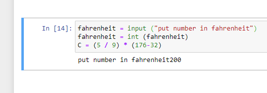
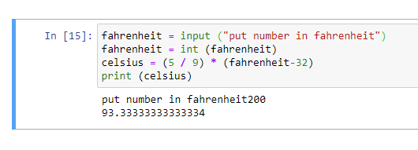

ממה שקראתי ואני מבין אני צריך ליצור שורה חדשה מתחת ולהתייחס לזה כ str. הבעיה היא כשאני מבצע את זה עבור המספרים השלמים הוא נותן לי הערה אחרת.
can’t multiply sequence by non-int of type ‘str’
{kind=link}
@josefh.biz אתה צריך לשים רווח אחרי "the number is לפני הגרשיים הנוספים זה אמור להיות "the number is "
זה בגלל שהפעולה של ההדפסה משרשרת את האיברים אחד ליד השני בלי רווחים, אם אתה רוצה רווחים תרשום אותם
print(“hello” + “world”) # result : helloworld
print("hello "+“world”) # result : hello world
תרשום רווח אחרי המחרוזת הראשונה ולפני האחרונה בתוך המחרוזת עצמה.
סתם שתדע, הפעולה של ההדפסה גם יכולה להדפיס לך רווח אוטומטי ואפילו לחסוך לך את הצורך להמיר מספר שלם למחרוזת אם אתה מכניס כל פרמטר שאתה רוצה להדפיס עם פסיק בניהם
print(“the number is”,inside_a_box,“krembo”)
זה ידפיס לך רווח אחרי כל פרמטר וזה גם אוטומטית ממיר לך מספר שלם למחרוזת
האמת יש מלא מניפולציות שאפשר לעשות למחרוזות וכשרוצים להדפיס
יש fstrings
יש string format
ממליצה לך לקרוא עליהם ובמיוחד על הראשון כי הם ממש נוחים ומקלים על העבודה
לייק 1
הצלחת לעשות את תרגיל התה 2?
קרן מדייקת, אבל אנחנו ממליצים לא להשתמש בפסיקים כדי להבין יותר טוב איך מנגנון הטיפוסים בפייתון עובד 
סבבה.
אפשר בבקש הסבר על תרגיל התה 2?
של המרת פרנהייט לצלזיוס? כן. זה כמו תרגיל התה 1 רק שהפעם במקום שהמספר נתון לך מראש אתה קולט אותו מהמשתמש (ובהתאם צריך להמיר לטיפוס מתאים כדי לבצע חישובים)
עד כה הרצתי ככה

אוקי אז אתה בכיוון הנכון. מה שעשית זה :
-קלטת מעלות בתור מחרוזת אל תוך משתנה בשם “fahrenheit”
-ואז המרת את הערך שהיה בתוך המשתנה ממחרוזת למספר שלם.
-ואז שמת בתוך משתנה בשם C(שם לא ממש מומלץ כי הוא לא משמעותי מספיק, ויש קונבנציה לרשום שמות משתנים באות קטנה אבל זה לא משפיע בתכלס על התרגיל) תוצאה של תרגיל חישוב.
רק תחשוב שעכשיו המעלות בפרנהייט הן לא בטוח 176, אלא הן מה שהמשתמש הכניס(מאוכסן לך במשתנה “fahrenheit”) אז במקום 176 תרשום את שם המשתנה שמאכסן את המעלות ותדפיס את התשובה.
ביצעתי ככה אבל הפלט יוצא מוזר

כן כי זה קשור לאיך שpython מתמודד עם floats. אתה יכול להפוך את זה ליותר אסטטי על ידי שימוש בפעולה round() או לבחור להציג רק 2 נקודות עשרוניות עם fstrings כלומר לרשום :
print(f"{celsius:.2f}")
fstrings
כמו שאמרתי עוזר לרשום מחרוזות. איך שזה עובד זה שאתה רושם ביטויים במרכאות האלה {} ואז זה יודע להמיר לך לטיפוס הנכון בלי שתצטרך ידנית ויכול לאפשר כל מיני דברים נוספים כמו לדוגמה מה שרשמתי לך שאומר להשאיר רק 2 מספרים אחרי הנקודה (אם אתה תשנה את 2 למספר אחר זה ישאיר מספר אחר של ספרות אחרי הנקודה)
הבעיה היא כשהכנסתי את ה type fahrenheit לתוך התצאה הסופית הוא בפלט הסופי כשאני מבקש להדפיס הוא מראה לא את put number in fahrenheit
לא ממש הבנתי למה אתה מתכוון
תסתכלי בתמונה.
כשאני מבקש להדפיס את התוצאה הסופית אני מקבל put number in fahrenheit ואת המספר.
אני רוצה לקבל רק את המספר ולא את הפלט של מה שה type מבקש.
אבל כשאתה רושם input(“msg”) זה מדפיס הודעה למשתמש ואז כשאתה מכניס את המספר שלך זה מראה אותו.
בפועל אתה אמרת לתוכנית להדפיס את התוצאה וזה מה שהיא עושה. העובדה שזה מדפיס לך את ההודעה של הinput זה פשוט כי ככה input עובד, הוא מדפיס למשתמש הודעה ומדפיס לך את הקלט שהכנסת.
השאלה האם זה תקין. כי התשובה עצמה נראית אבל לא יודע האם עשיתי אותה נכון
כן זה אמור לצאת לך ככה, זה תמיד ידפיס גם את ההודעה של הinput ואת המספר שהוכנס
איך בדיוק התרגיל של מסטיק בזוקה עובד?
אני מבין שאני צריך להכניס משתנים ששואלים מה השם ומה הגיל שלך. אבל בפועל איך הוא יודע לחשב כמה שנים נשאר לי עד גיל 90?
היי @josefh.biz אתה צריך להגדיר משתנה שהתוכן שלו זה הגיל שהמשתמש כתב, ולחשב כמה נשאר מזה ל 90, אפשר לעשות את זה בפעולות של חשבון.